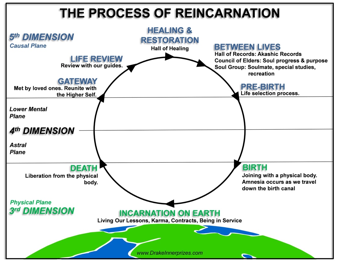

A JAPANESE BUDDHIST VIEW OF THE HUMAN PERSON--2
1. SLIDE #1--Japanese View & Liquid Life--Densification (Human Becoming vs. Human Being)
2. SLIDE #2--Three Books: (1) William R. LaFleur--Liquid Life; (2) Helen Hardacre--Marketing the Menacing Fetus; and (3) Jeff Wilson--Mourning the Unborn Dead: A Buddhist Ritual Comes to America
3. SLIDE #3--Three pictures of Jizo Statues (Bottom picture shows numerous Jizo statues as part of Buddhist Temple ritual) Jizo is Bodhisattva--Enlightenment Being who cares for children and unborn
4. Mizuko Kuyo Ritual (Abortion illegal in Japan--but with exceptions for health of mother)
5. Mizuko = water child + Kuyo = Ritual
6. Moment of Conception (Liquid Life--Human Becoming)-->Densification (on the way to becoming HP/Human Being)
7.

8. Body1-->Body2-->Body--> and so on--What connects bodies and what exactly is passed on? Stream of Consciousness or “Soul”
9. When does human life begin? The Process of Densification takes place between during pre-birth to birth stages in the picture
10. The main arguments:
P1--If Liquid-->then not HP
P2--Liquid
So, Not HP
P1--If HP-->then not Liquid
P2--Liquid
So, Not HP
11. So, if these arguments are sound, then miscarriage or abortion does not kill HP
12. In other words, Abortion sends being back to other realm--to be reborn at some later time (It redirects the flow of the stream of consciousness--it does not kill it)
13. But Mizuko Kuyo Ritual helps with feelings of guilt & to assuage the upset fetus
14. Is all of this really authentically Buddhist? George Tanabe (UH, Manoa) says no
15. Helen Hardacre thinks the ritual was created to take advantage of women and raise money for the temples--and is really not about Buddhist beliefs about the HP
16. Regardless of the answer to that question, it should be clear that answers to moral questions depend on what one thinks about what makes something be a HP and when HP exists